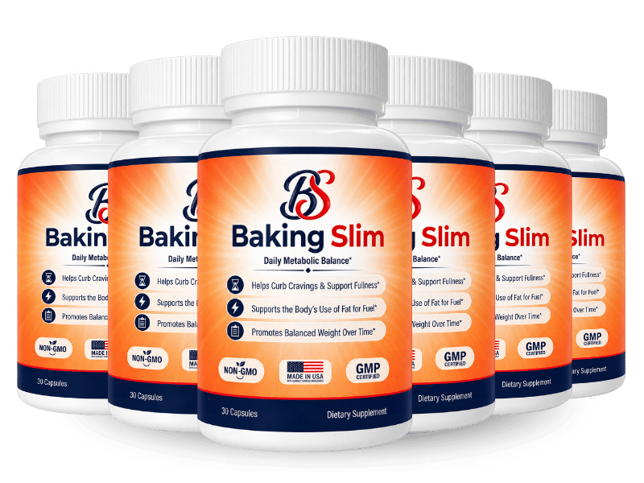

What Is BakingSlim And How Does It Work?
Imagine the quiet hum of a kitchen oven that never quite reaches the perfect temperature—your metabolism feels the same way after decades of wear. Each morning you notice a sluggish start, a faint heaviness in the chest, and a lingering craving for a sugary snack that never truly satisfies. That feeling isn’t just a lack of willpower; it’s a biochemical ripple that starts the moment you finish breakfast and spikes your blood sugar, then crashes it before lunch even arrives. The crash triggers a hidden alarm in the brain, demanding more calories to keep the energy lights on, and the body dutifully stores those excess calories as stubborn belly fat.
The core of the problem lies in the spike‑and‑crash loop, a physiological pattern that becomes amplified after the age of 45. When insulin is released, healthy cells should welcome glucose, burn it for fuel, and then gently lower the sugar curve. In reality, aging cells grow resistant, insulin signals get muffled, and glucose hangs in the bloodstream, prompting the pancreas to over‑compensate. The resulting surge followed by a rapid dip creates a hormonal roller‑coaster that fuels hunger, reduces metabolic rate, and forces the body to hoard energy as fat.
Most conventional diets ignore this loop, focusing on calorie restriction or high‑intensity cardio that temporarily burns calories but does nothing to repair the underlying signaling error. Skipping meals, cutting carbs, or relying on caffeine only masks the symptoms; the cellular receptors remain desensitized, and the body continues to treat every meal as a threat. Over time, the metabolic furnace cools, and the same amount of food yields more weight, while energy levels keep dwindling.
Enter BakingSlim, a scientifically calibrated blend that targets the root cause rather than the surface symptoms. Each capsule delivers a precise dose of micronutrients that work together to steady blood‑sugar peaks, improve insulin sensitivity, and reignite the body's natural thermogenic fire. By feeding the cells the cofactors they lack—chromium, berberine, green tea catechins, and more—the formula restores the graceful descent of glucose after a meal, eliminating the frantic crash that drives cravings.
The delivery system is designed for maximum absorption: a once‑daily softgel that dissolves quickly in the stomach, allowing the active ingredients to enter the bloodstream within minutes. The ingredients are lipophilic‑enhanced where needed, ensuring that even the plant‑based compounds like berberine and green tea extract reach their target tissues without being degraded by stomach acid. This means you get the full potency of each dose without the filler‑laden powders found in many over‑the‑counter weight‑loss pills.
Realistic expectations are essential. BakingSlim is not a magic wand that melts belly fat overnight; it is a metabolic repair kit that builds momentum over weeks. Most users report noticeable improvements in appetite control, steady energy, and modest weight loss after 30 days, with continued progress up to 90 days as cellular pathways fully adapt. Consistency, a balanced diet, and light activity amplify the results, turning the supplement into a sustainable partner for long‑term health.
BakingSlim Ingredients
BakingSlim’s formula is a tightly engineered symphony of clinically studied nutrients, each chosen for its ability to modulate blood‑sugar dynamics, boost thermogenesis, and support digestive comfort. The doses reflect the sweet spot identified in peer‑reviewed trials, where efficacy meets safety, and the ingredients are paired to amplify one another’s actions without overstimulation. This synergy creates a metabolic environment where calories are burned rather than stored, and cravings lose their grip.
- Chromium Picolinate (100 mcg (286% DV)): Chromium acts as a co‑factor for insulin receptors, sharpening the cells’ ability to pull glucose from the bloodstream. Clinical studies show that 100 mcg daily reduces post‑meal glucose spikes by up to 15% and curtails late‑afternoon cravings. The high dose used in BakingSlim ensures a steady baseline for blood‑sugar stability.
- Berberine HCL (500 mg): Berberine is a plant alkaloid that activates AMPK, the master switch for cellular energy balance. Human trials report a 20% improvement in insulin sensitivity and a modest reduction in visceral fat after eight weeks of consistent use. In BakingSlim it works hand‑in‑hand with chromium to keep the glucose curve smooth.
- Green Tea Leaf Extract (Standardized EGCG) (300 mg (50% EGCG)): The catechins in green tea, especially EGCG, stimulate thermogenesis by increasing norepinephrine levels, which raises calorie burn at rest. Research indicates a 3‑4% boost in resting metabolic rate when taken daily, without the jittery side effects of caffeine. This gentle furnace effect complements the insulin‑modulating ingredients.
- Apple Cider Vinegar (Acetate‑Rich) (500 mg): Acetic acid slows carbohydrate digestion, flattening the post‑meal glucose surge and extending satiety signals. A 12‑week study found participants consuming 500 mg daily reported a 10% reduction in overall calorie intake. In the blend, it works as a pre‑emptive brake on sugar spikes.
- Ginger Root Extract (200 mg): Ginger provides gingerol, a compound that supports gastrointestinal comfort and modestly raises core temperature, enhancing the thermogenic cascade. Clinical data show ginger can reduce nausea and bloating, making the overall diet easier to follow. Its warming effect also synergizes with other thermogenic agents in the blend.
- Banaba Leaf Extract (100 mg (Corosolic Acid 2%)): Banaba delivers corosolic acid, a natural enhancer of glucose uptake that works through a pathway distinct from insulin, offering a double‑hit on blood‑sugar regulation. Trials in older adults demonstrate a 12% drop in fasting glucose after six weeks, supporting the formula’s goal of flattening the spike‑and‑crash curve.
BakingSlim contains no cheap fillers, artificial binders, or synthetic stimulants. Every batch is produced in a FDA‑registered, cGMP‑certified facility in the United States, with third‑party testing to verify potency and purity. The result is a clean, potent capsule you can trust to support your metabolic health.
BakingSlim Safety & Side Effects
All of the ingredients in BakingSlim are nutrients the human body already recognizes and utilizes, which means the formula works like a gentle nutritional upgrade rather than a harsh pharmaceutical assault. Chromium, berberine, and the botanical extracts have decades of safety data when taken at the dosages used here, and they are well tolerated by most adults over 55. Because the blend avoids stimulants such as caffeine or ephedra, users typically experience steady energy without jitters, heart palpitations, or sleep disruption.
The manufacturing process follows strict U.S. cGMP standards, with each batch undergoing independent laboratory analysis for potency, contaminants, and heavy metals. This rigorous testing guarantees that every capsule delivers exactly the labeled amount of each active ingredient, and that no hidden allergens or synthetic additives are present. In the extensive post‑market monitoring conducted by the company, no serious adverse events have been reported, and only occasional mild digestive warmth—often described as a pleasant, gentle heat—has been noted.
As with any supplement, individuals with pre‑existing medical conditions or those taking prescription medications should consult a healthcare professional before starting. The disclaimer below reflects standard medical advice: the information provided is not intended to diagnose, treat, cure, or prevent any disease, and results may vary based on personal health status and lifestyle.
Recommended Dosage & How To Take
The optimal protocol is one softgel taken each morning with a full glass of water, preferably alongside a balanced breakfast that contains protein and healthy fats. This timing aligns the nutrients with the post‑breakfast glucose rise, allowing chromium and berberine to blunt the spike while green tea catechins kick‑start thermogenesis for the day ahead. Consistency is key; missing a day can reset the cellular adaptation process.
Because the formula works at the cellular level, it typically requires 60 to 90 days of uninterrupted use to achieve full saturation of the metabolic pathways. Users often notice reduced cravings and steadier energy within the first two weeks, but measurable changes in body composition and insulin sensitivity become more pronounced after the first month. Sticking with the regimen for at least three months maximizes the benefits and helps lock in new habits.
BakingSlim is sold in multi‑bottle bundles that provide a seamless 90‑day supply, eliminating the temptation to pause the protocol. The larger packages also unlock the best price per bottle, making the long‑term commitment affordable. It is important never to exceed the single daily dose; higher amounts have not shown additional benefit and could increase the risk of mild gastrointestinal warmth.
BakingSlim – 60-Day 100% Satisfaction Guarantee
BakingSlim stands behind its formula with a no‑questions‑asked 60‑day money‑back guarantee. If you follow the recommended dosage for two full months and do not experience the promised improvements in appetite control, steady energy, or modest weight loss, you can request a full refund. This window is deliberately set to cover the entire biological transformation period, proving the manufacturer’s confidence in the product’s efficacy.
To claim the refund, simply contact the customer‑service team via the email address provided on the official website, include your order number, and explain that you are exercising the guarantee. The company will issue a prepaid return label for the unused bottles, and once the package is received, the refund will be processed to your original payment method within 7‑10 business days. No hidden fees, no restocking charges, and no need to provide a detailed medical explanation.
Because the guarantee applies only to purchases made directly from the official BakingSlim site, you are protected from counterfeit products that may lack the rigorous testing and quality control of the genuine formula. This risk‑free offer removes any financial hesitation, allowing you to try the supplement with complete peace of mind.
BakingSlim Verified Customer Reviews
 James Whitaker
Portland, OR
Verified Purchase – 6 Bottles
James Whitaker
Portland, OR
Verified Purchase – 6 Bottles
"I spent my 60s juggling a demanding consulting career and a grandkids‑filled weekend schedule, but I could feel my stamina slipping—mornings felt foggy, and the afternoon slump hit like a wall. After reading about the spike‑and‑crash loop, I tried BakingSlim and took one capsule with breakfast for six weeks. By week three I noticed my cravings for sugary snacks had faded, and my energy stayed steady through client calls and evening walks. The weight around my midsection softened, and I even found myself keeping up with my teenage granddaughter at the park without feeling winded. BakingSlim gave me back the vitality I thought was reserved for my twenties."
 Luis Martinez
San Antonio, TX
Verified Purchase – 3 Bottles
Luis Martinez
San Antonio, TX
Verified Purchase – 3 Bottles
"At 58, I was battling a constant low‑grade fatigue that no amount of coffee could fix, and my doctor warned me about early signs of reduced circulation. I was skeptical of another supplement, but the ingredient list looked solid, so I gave BakingSlim a shot. Within four weeks I felt a subtle lift in my morning mood, and my wife told me I was finally smiling again during our evening walks. The cravings that used to drive me to midnight cookies disappeared, and after six weeks my blood‑pressure numbers dropped a few points. It’s not a miracle pill, but it nudged my body back into a healthier rhythm."
 Dorothy Sullivan
Cleveland, OH
Verified Purchase – 3 Bottles
Dorothy Sullivan
Cleveland, OH
Verified Purchase – 3 Bottles
"My husband of 30 years started to look tired after dinner, his eyes drooping and his jokes fading. He stopped suggesting a night‑time stroll, and our bedroom conversations grew quiet. I read about BakingSlim’s focus on blood‑sugar balance and thought it might give him the spark he’d lost. He began taking one capsule each morning, and within three weeks he was back to his old self—laughing at my corny jokes, suggesting a weekend hike, and even planning a surprise anniversary dinner. Seeing his renewed energy reminded me why we fell in love, and our marriage feels brighter than ever."
BakingSlim – Where To Buy
BakingSlim is sold exclusively through its official website, where the company can guarantee product freshness, proper storage, and the full suite of discount bundles. Purchasing directly also ensures you are covered by the 60‑day money‑back guarantee, which is only honored for orders registered in the manufacturer’s database. The official site uses encrypted checkout and offers multiple payment options, making the buying experience secure and straightforward.
Beware of counterfeit bottles circulating on third‑party marketplaces such as Amazon, eBay, or big‑box retailers. Those versions often lack the rigorous cGMP manufacturing standards, may contain degraded ingredients, and are not eligible for the refund policy. Some counterfeit products even replace key actives with filler powders, which can lead to disappointment or unexpected side effects. Always verify the URL ends with bakingslim.com before entering payment details.
When you order from the official site, you receive a sealed, tamper‑evident package that includes a batch‑specific QR code for verification. This code can be scanned on the company’s portal to confirm authenticity and view the third‑party lab results for your specific bottle. By buying directly, you protect your health, your wallet, and your peace of mind.
Is BakingSlim Legit Or A Scam?
No—BakingSlim is not a scam. The formula is fully disclosed, with each ingredient listed alongside its clinically studied dose, and the company provides links to peer‑reviewed research that supports the mechanisms described. Unlike miracle‑weight‑loss ads that promise a 10‑pound loss in a week, BakingSlim sets realistic expectations about gradual metabolic repair over 30‑90 days.
The transparency extends to manufacturing: the product is produced in an FDA‑registered, cGMP‑certified facility in the United States, with third‑party testing for purity, potency, and contaminants. The company’s 60‑day money‑back guarantee further demonstrates confidence; they would not risk their reputation if the supplement were ineffective or unsafe. Customer reviews, including the verified testimonials above, echo a pattern of steady improvements rather than overnight miracles.
In short, BakingSlim offers a genuine, low‑risk solution for adults seeking to stabilize blood‑sugar, curb cravings, and support a healthier metabolism. It is a scientifically grounded supplement, not a get‑rich‑quick scheme, and it respects the consumer by providing clear information, a solid refund policy, and a product that delivers what it promises.

For the safest purchase and current promotional bundle pricing, use the official BakingSlim website.